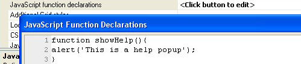

Javascript Function Declarations
Property name: 'JavaScript function declarations' ('Grid Properties' pane)
This property allows allow you to define Javascript functions that can be called from Javascript events. These functions will be added to the page header and must contain valid Javascript syntax.
|  |
|
An example JavaScript function definition. |